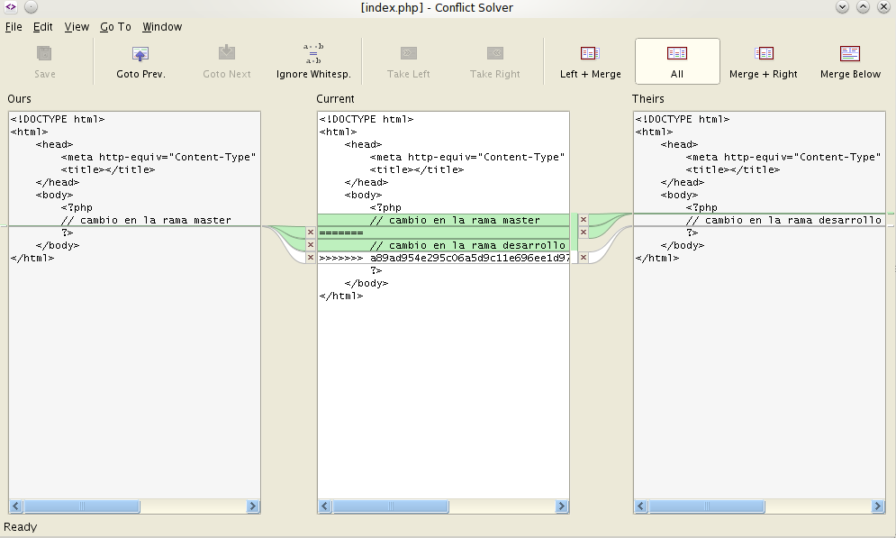

GIT
No es tan complicado como parece
Elaborado por @e_mamut
Y ahora... algo de historia
¿Que es GIT?
- Control de versiones
- Diseñado por Linus Torvald
- Evangelizado por Github
- Potenciado la distribución de Codigo Libre
- Mejorado la participación en Comunidades
Pero... ¿porque?
Razones para utilizar Git
- Organización
- Historial de cambios
- Trabajo en equipo
- Puestas en Producción más rápida y limpia (
FTP)
Ahora si... vamos al mambo!
¿Que es un Servidor GIT?
¿Que es un Repositorio?
- Es un Proyecto o directorio raiz
- Solo local y/o remoto
- Tambien 'vigila' los subdirectorios con contenido
- Privado* o publico
Que es un Commit?
- Empaqueta los cambios realizados
- Solo afecta al repositorio local
Comando PUSH
Envia los cambios (commits) al repositorio remoto
Comando PULL
- Trae los cambios (commits) subidos (push) por otros usuarios al repositorio remoto
- Obligatorio antes de hacer PUSH
Branch (Rama)
- Organiza el trabajo en equipo y el ciclo de vida del proyecto
- La rama principal y por defecto se llama Master
- El comando Merge une los cambios realizados entre ramas

Resolucion de Conflictos
Continuous Deployment
- Evita el uso de FTP para subir a Producción
- Actualiza más rapido
- Previene errores
- Facil revertimiento de cambios